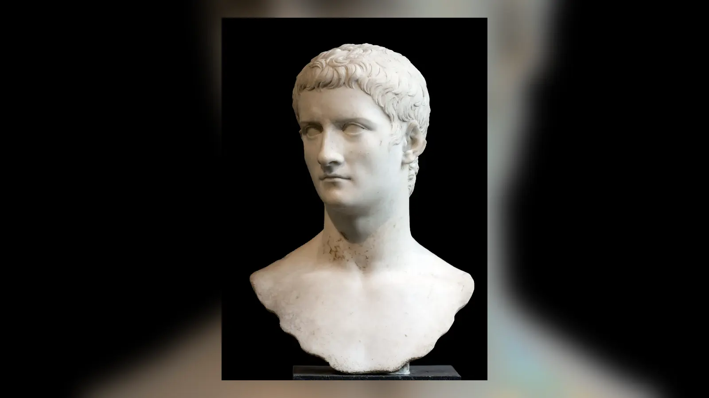
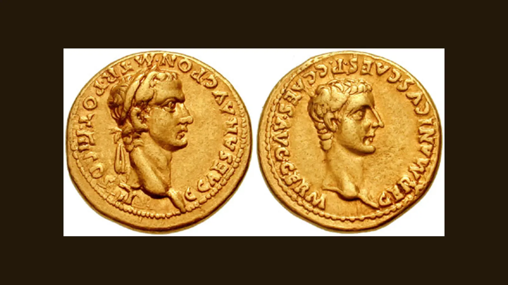

Caligula’nın adı yaklaşık iki bin yıldır ölçüsüz iktidarın, tuhaf gösterilerin ve zalimliğin simgelerinden biri olarak kullanılıyor. Atını konsül yaptığı, denize savaş açtığı, askerlerine deniz kabuğu toplattığı, kız kardeşleriyle cinsel ilişki yaşadığı ve kendisini yaşayan bir tanrı olarak gördüğü anlatıları bugün bile onun biyografisinin önüne geçebiliyor. Fakat bu hikâyelerin hepsi aynı derecede sağlam değildir. Caligula’nın MS 37–41 arasındaki yaklaşık dört yıllık hükümdarlığında siyasi şiddetin, tasfiyelerin, Senato ile ağır bir çatışmanın ve sonunda kendi muhafızlarının da katıldığı bir suikastın bulunduğu konusunda kuşku azdır. Buna karşılık onun modern anlamda belirli bir psikiyatrik hastalığa sahip olduğunu gösterecek klinik kayıtlarımız, güvenilir tıbbi gözlemlerimiz veya doğrudan kanıtlarımız yoktur.
Bu nedenle “Caligula gerçekten deli miydi?” sorusuna tarihçinin verebileceği cevap, popüler kültürün sunduğundan daha ihtiyatlıdır. Caligula’nın bazı kararları çağdaşları ve sonraki yazarlar tarafından aşırı, zalim ve tehlikeli görülmüş; hükümdarlığı ciddi siyasi krizler üretmiştir. Ancak “deli imparator” portresini bize aktaran kaynakların büyük bölümü onun ölümünden sonra kaleme alınmış, seçkinlerin ve özellikle senatör çevrelerin bakışını yansıtan metinlerdir. Üstelik Tacitus’un Caligula dönemini anlatan Annales kitapları günümüze ulaşmamıştır. Elimizdeki anlatı bu yüzden hem eksik hem de skandal, anekdot ve ahlaki karakter tasvirleriyle yüklüdür.
Bu durum Caligula’yı aklamayı gerektirmez. Kaynakların taraflı olduğunu söylemek, idamların, müsaderelerin, Kudüs Tapınağı çevresinde gelişen büyük krizin veya imparatorun çevresinde biriken korkunun hayal ürünü olduğunu söylemek değildir. Asıl mesele, doğrulanabilen siyasi olaylarla tiranlık edebiyatının kalıplarını birbirinden ayırmaktır. Caligula’nın hikâyesi ancak böyle okunduğunda “çılgın bir adamın dört yılı” olmaktan çıkar; erken Roma İmparatorluğu’nda hükümdarın gerçek gücü ile Augustus’tan miras kalan cumhuriyetçi görünüm arasındaki gerilimin ne kadar tehlikeli olabileceğini gösteren bir örneğe dönüşür.
Caligula Kimdi ve Gerçek Adı Neydi?
Caligula’nın gerçek adı Gaius Julius Caesar Germanicus’tu. MS 12’de doğdu ve Julio-Claudian hanedanının en güçlü soy bağlarından birinin içine geldi. Babası Germanicus, Drusus’un oğluydu ve İmparator Tiberius tarafından evlat edinilmişti. Annesi Yaşlı Agrippina ise Marcus Vipsanius Agrippa ile Augustus’un kızı Yaşlı Julia’nın çocuğuydu. Böylece Gaius, Augustus’un kan soyuna annesi üzerinden bağlanırken babası aracılığıyla da imparatorluk ailesinin merkezindeki Claudius koluyla ilişkiliydi. Julius Caesar’ın doğrudan oğlu değildi; zaten Caesar’ın öldürülmesi ile Gaius’un doğumu arasında yarım yüzyıldan fazla zaman vardı. “Caesar” adı bu dönemde artık yalnız tek bir kişiyi değil, hanedan kimliğini ve giderek hükümdarlık makamını çağrıştıran bir unsurdu.
Bugün onu herkesin tanıdığı “Caligula” ise çocukluğunda ortaya çıkan bir lakaptı. Germanicus’un askerî görevleri sırasında küçük Gaius ordu kamplarında bulundu ve asker kıyafetinin çocuk ölçüsündeki bir biçimini giydi. Roma askerlerinin kullandığı çivili asker sandalına caliga deniyordu; Caligula da kabaca “küçük caliga” veya “küçük asker çizmesi” anlamına gelen sevecen bir lakap olarak ortaya çıktı. Modern anlatıda bu ad o kadar baskındır ki Gaius neredeyse unutulmuştur. Antik çağda ise adlandırma alışkanlıkları bugünkünden farklıydı ve yetişkin imparatorun bu çocukluk lakabıyla kurduğu kişisel ilişkiyi kesin biçimde bildiğimizi varsaymak doğru olmaz.
Bu çocukluk görüntüsü yalnız hoş bir ayrıntı değildir. Germanicus’un askerler arasındaki itibarı, oğlunun daha sonra tahta çıkışında önemli bir siyasi sermayeye dönüşecekti. Gaius’un başlangıçtaki popülerliğini anlamak için, Romalıların yalnız yeni bir hükümdar görmediğini; Germanicus’un hayatta kalan oğullarından birinin iktidara geldiğini de hatırlamak gerekir.

Germanicus’un Oğlu Olmak Neden Bu Kadar Önemliydi?
Germanicus, erken principatus döneminin en dikkat çekici hanedan figürlerinden biriydi. Ren ordularıyla ilişkisi, askerî seferleri ve imparatorluk ailesindeki konumu ona güçlü bir kamuoyu itibarı kazandırmıştı. MS 19’da Antiokheia’da ölmesi bu nedenle sıradan bir aristokratın ölümünden çok daha büyük siyasi sonuç doğurdu. Germanicus ile Suriye valisi Gnaeus Calpurnius Piso arasında ciddi bir gerilim yaşanmıştı ve ölümün ardından zehirlenme şüpheleri yayıldı. Antik kaynaklar entrika ihtimallerini aktarır; fakat Tiberius’un Germanicus’u öldürtmek için emir verdiğini kanıtlayan sağlam bir delil yoktur. Daha sonraki hanedan anlatısında bu ölümün kuşkularla çevrilmiş olması, Tiberius ile Germanicus ailesi arasındaki düşmanlık hikâyesini daha da büyüttü.
Germanicus’un ölümünden sonra Yaşlı Agrippina ile Tiberius’un çevresi arasındaki gerilim giderek sertleşti. Agrippina sürgüne gönderildi; Caligula’nın ağabeyleri Nero Caesar ile Drusus Caesar da siyasi tasfiyenin kurbanı oldular. Ailenin parçalanması Gaius’un gençlik yıllarını doğrudan belirledi. Önce büyükannesi Livia’nın, ardından Antonia Minor’un çevresinde yaşadı; daha sonra Tiberius’un Capri’deki saray çevresine katıldı. Bu yılları “çocukluk travması onu deliliğe sürükledi” gibi modern bir psikolojik formüle indirgemek tarihsel olarak savunulamaz. Ancak genç Gaius’un iktidarın en yakın akrabaları bile hızla yok edebildiği bir saray düzeninde yetiştiği gerçeği, onun siyasi dünyasını anlamak açısından önemlidir.
Tiberius’un Capri’deki hayatı hakkında özellikle Suetonius son derece çarpıcı cinsel ve ahlaki skandallar anlatır. Bunlar yüzyıllar boyunca “çürümüş saray” görüntüsünün temel malzemelerinden biri olmuştur. Fakat kötü hükümdarın özel hayatını ahlaki sapkınlıklarla açıklama, Roma biyografi ve tarih yazımında tekrarlanan bir yöntemdi. Dolayısıyla Capri’deki her ayrıntıyı bağımsız biçimde doğrulanmış olaylar gibi kullanmak mümkün değildir. Caligula’nın bu ortamda hayatta kalması ise daha sağlam bir olgudur: ailesinin başına gelenlere rağmen Tiberius’un yanında yaşamayı başardı ve doğrudan bir tasfiyeye uğramadı.
Caligula Tiberius’un Sarayında Nasıl Hayatta Kaldı?
Caligula’nın Capri yılları sonraki yazarlar için güçlü bir dramatik malzeme sundu. Bir yanda ailesinin düşmanıyla aynı sarayda yaşayan genç prens, diğer yanda yaşlı Tiberius’un şüphelerle çevrili yönetimi vardı. Caligula’nın burada duygularını sakladığı, kendisini tehlikeye atacak tepkiler vermediği ve çevresindeki güç dengelerine uyum sağladığı düşüncesi antik anlatıda önemli yer tutar. Bunun ne kadarının gerçek kişilik gözlemi, ne kadarının sonradan kurulmuş “geleceğin tiranı kendisini gizliyordu” teması olduğunu ayırmak zordur.
Yine de hanedan siyasetinin mantığı açıktır. Tiberius’un son yıllarında ardıllık meselesi hassastı. Germanicus’un yaşayan oğlu Gaius büyük bir isim avantajına sahipti; Tiberius’un torunu Tiberius Gemellus ise doğrudan hanedan bağlantısına rağmen daha gençti. Praetorian Prefekti Naevius Sutorius Macro da iktidar geçişinde önemli bir aktör hâline geldi. Daha sonraki kaynaklar Macro’nun Gaius’un yükselişindeki rolünü, hatta eşi Ennia üzerinden kurulduğu söylenen özel ilişkileri anlatır. Ancak saray dedikodularını devlet kararlarının tek açıklaması hâline getirmek, kaynakların sevdiği kişisel entrika şemasına teslim olmak olur.
Tiberius MS 37’de öldüğünde de benzer bir sorun karşımıza çıkar. Bazı antik anlatılar onun doğal ölümünün ardından yeniden kendine geldiğini, sonra Macro veya Gaius’un müdahalesiyle öldürüldüğünü söyler. Başka anlatı ayrıntıları farklıdır. Bu nedenle “Caligula Tiberius’u öldürdü” cümlesi kesin bir tarihsel bilgi değildir. Kesin olan, Tiberius’un ölümünün ardından Gaius’un çok hızlı biçimde üstün konuma gelmesi ve Gemellus’un ortak mirasçı olmasına rağmen siyasi ağırlığın Gaius üzerinde toplanmasıdır.
Caligula Nasıl İmparator Oldu?
Gaius MS 37’de iktidara geldiğinde Roma’da güçlü bir kabul gördü. Germanicus’un hatırası bunda büyük rol oynuyordu. Tiberius’un son yıllarındaki yönetim tarzından hoşnutsuz olan kesimler için yeni ve genç hükümdar aynı zamanda bir değişim umuduydu. Senato, halk ve askerler açısından farklı beklentiler bulunsa da Gaius’un hanedan meşruiyeti tartışılmaz derecede güçlüydü. İktidarın hukuki ve siyasi biçimi Augustus’tan beri olduğu gibi tek bir “taç giyme” anına indirgenemezdi; çeşitli yetkilerin, onurların ve sadakat ilişkilerinin imparatorun elinde birleşmesiyle işliyordu.
Gemellus’un konumu kısa süre içinde ortadan kalktı. Gaius onu evlat edinerek bir süre için hanedan düzeninin içine almış olsa da Gemellus daha sonra öldürüldü. Kaynaklar bu olayı komplo şüphesi, imparatora karşı tehdit ve intihar emri gibi ayrıntılarla aktarır. Sonucun kendisi güçlüdür: Tiberius’un torunu artık ardıllık denkleminde yoktu. Benzer biçimde Macro ve Ennia da Gaius’un iktidarının ilk döneminden sonra ortadan kaldırıldı. Bu tasfiyeler, saltanatın daha başlangıcında hanedan güvenliğinin ve saray çevresindeki rekabetin ne kadar sert olduğunu gösterir.
Caligula’nın ilk ayları sonraki kötü şöhretiyle o kadar keskin karşıtlık içinde anlatılır ki tarihçiler bu şemaya ihtiyatla yaklaşır. Sürgündekilerin geri çağrılması, bazı suçlama belgelerinin reddedilmesi, halka ve askerlere dağıtımlar, oyunlar ve Germanicus ailesinin anısının canlandırılması yeni hükümdarın popülerliğini besledi. Fakat “önce kusursuz hükümdardı, sonra hastalandı ve bir gecede canavara dönüştü” anlatısı, biyografik bir dönüşüm hikâyesi olarak da işlev görür. Gerçek siyasi değişimleri kabul etmek başka, bütün saltanatı iki karşıt kişilik dönemine ayırmak başkadır.
MS 37’deki Hastalık Caligula’yı Değiştirdi mi?
Caligula’nın tahta çıkışından birkaç ay sonra ciddi biçimde hastalandığı antik kaynaklarda yer alır. Roma’da hükümdarın hastalığının yarattığı kaygı, onun başlangıçtaki popülerliğini de gösterir. Fakat hastalığın ne olduğunu bilmiyoruz. Sonraki yüzyıllarda ve modern dönemde ensefalit, epilepsi, hipertiroidi, frengi, kurşun zehirlenmesi ve çeşitli psikiyatrik durumlar önerildi. Bunların hiçbiri Caligula için kanıtlanmış bir teşhis değildir. İki bin yıl önce yaşamış bir insan için klinik muayene, hasta dosyası, laboratuvar verisi ve güvenilir semptom dizisi olmadan modern tanı koymaya çalışmak tarihsel kanıtın taşıyabileceğinden fazlasını istemektir.
Daha önemli sorun, hastalığın anlatıdaki işlevindedir. Suetonius gibi yazarların Caligula biyografisinde hükümdarın iyi eylemlerinden kötü eylemlerine geçiş belirgin bir yapısal rol oynar. Hastalığın gerçekten yaşanmış olması, sonraki bütün politikaların biyolojik bir kişilik değişiminden kaynaklandığını göstermez. İmparator ile Senato arasındaki ilişkilerin bozulması, saray komploları, hanedan tasfiyeleri, mali baskılar ve hükümdarlık ideolojisinin değişmesi gibi siyasi süreçler ayrıca açıklanmalıdır.
Bu ayrım “Caligula sağlıklıydı” demek de değildir. Onun zihinsel durumunu güvenilir biçimde yeniden kurabilecek veriye sahip olmadığımızı kabul etmektir. Tarihçi, siyasi davranışın sonuçlarını inceleyebilir; bir imparatorun keyfî cezalandırmalarını, tehditlerini veya kriz yaratan kararlarını tartışabilir. Fakat bunları belirli bir modern psikiyatrik hastalığın semptomları olarak sınıflandırmak, eldeki kaynakların sınırını aşar.
Caligula Neden Ailesini ve Yakınlarını Tasfiye Etti?
Gaius’un saltanatının sertleşmesinde saray içi güvenlik ve hanedan rekabeti merkezi bir yer tutar. Gemellus’un ölümünün ardından Macro’nun ortadan kaldırılması, daha sonra Marcus Aemilius Lepidus çevresindeki kriz ve Caligula’nın kız kardeşleri Agrippina ile Livilla’nın sürgün edilmesi, imparatorun yakın çevresinde ciddi bir siyasi mücadele yaşandığını gösterir. Antik yazarlar bu olayları çoğu zaman cinsel ilişkiler, kişisel ihanetler ve karakter kusurları üzerinden anlatır. Fakat Roma sarayında aile ilişkileri aynı zamanda iktidar ilişkileriydi; bir imparatorun kız kardeşi, kayınbiraderi veya olası varisi yalnız özel hayatın değil, ardıllık siyasetinin de parçasıydı.
Drusilla’nın MS 38’de ölümü Caligula için özellikle önemliydi. Ona alışılmadık derecede yüksek onurlar verildi ve ölümünün ardından tanrılaştırıldı. Caligula’nın yasının ölçüsüzlüğü hakkında antik kaynaklarda dramatik ayrıntılar vardır. Bununla birlikte Drusilla’nın ilahlaştırılması yalnız psikolojik bir tepki olarak okunmamalıdır. Julio-Claudian hanedanının kutsallık ve meşruiyet dili içinde kadın aile üyelerinin statüsü giderek önem kazanıyordu. Gaius’un kız kardeşlerine verdiği onurlar, hanedan görünürlüğünü güçlendiren siyasi bir boyuta da sahipti.
Caligula ile kız kardeşleri arasında ensest ilişki bulunduğu iddiaları devreye girer. Özellikle Drusilla ile ilişki yaşadığı hikâyesi popüler biyografilerde neredeyse tartışmasız gerçek gibi tekrarlanır. Oysa bu iddiaları bağımsız biçimde doğrulayacak kanıt yoktur ve cinsel sınır ihlalleri antik tiran tasvirlerinde hükümdarı ahlaken gayrimeşru göstermek için kullanılan güçlü motiflerdendir. Kız kardeşlere olağanüstü onurlar verilmesi tarihsel olarak daha sağlamdır; bu olgudan cinsel ilişki sonucuna otomatik olarak geçilemez.
Caligula ile Senato Neden Çatıştı?
Caligula’nın kötü şöhretinin merkezinde Senato ile ilişkisi bulunur. Bunu “demokratik parlamento ile diktatör arasındaki mücadele” gibi modern bir çerçeveye oturtmak yanıltıcıdır. Roma Senatosu seçkin aristokrat ailelerin, eski magistratların ve büyük servet sahiplerinin oluşturduğu bir kurumdu. Augustus’tan sonra gerçek askerî ve siyasi güç imparatorun elinde yoğunlaşmıştı; buna rağmen rejim kendisini açık bir krallık olarak sunmuyordu. İmparator, geleneksel kurumlara ve aristokrat statü hiyerarşisine saygı gösteriyor görünerek yönetiyor, Senato da imparatorun üstünlüğünü kabul ederken kendi onurunu korumaya çalışıyordu.
Caligula’nın bu hassas oyuna giderek daha az önem verdiği anlaşılıyor. Senatörlere yönelik aşağılayıcı davranışlar, bazı seçkinlerin yargılanması veya öldürülmesi, servet müsadereleri ve imparatorun üstünlüğünü teatral biçimde sergileyen hareketler kaynaklarda geniş yer tutar. Her anekdotu kelimesi kelimesine doğru kabul etmek gerekmez; fakat hükümdar ile senatör aristokrasisi arasında gerçek ve ağır bir çatışma bulunduğunu reddetmek de mümkün değildir. MS 39 civarındaki komplo ve tasfiye ortamı bu gerilimin yalnız sözlü atışmadan ibaret olmadığını gösterir.
Augustus’un kurduğu principatus, monarşik gücü cumhuriyetçi biçimlerle örten bir sistemdi. Caligula’nın davranışlarının bir kısmı, bu örtünün gereksiz olduğuna inanıyormuş gibi yorumlanmıştır. Modern araştırmalarda özellikle Senato’ya yönelik bazı tuhaf hareketlerin “delilik” yerine siyasi iletişim olarak okunması bu yüzden önemlidir. İmparator, senatörlerin gerçek güçsüzlüğünü yüzlerine vuruyor veya geleneksel saygınlık iddialarıyla alay ediyor olabilir. Bu yorum Caligula’nın davranışlarını daha iyi niyetli yapmaz; aksine iktidar ilişkisinin ne kadar aşağılayıcı ve tehditkâr hâle gelebildiğini açıklar.
Caligula Atını Gerçekten Konsül Yaptı mı?
Caligula’nın atı Incitatus, Roma tarihinin en ünlü hayvanlarından biridir. Popüler anlatıya göre imparator atını konsül yapmış ve böylece deliliğini resmen devlet yönetimine taşımıştır. Ancak antik kaynakların söylediği şey bu kadar kesin değildir. Suetonius, Incitatus için mermer ahır, fildişi yemlik, mor örtüler, hizmetçiler ve çeşitli ayrıcalıklar anlatır; ayrıca Caligula’nın atı konsül yapmayı planladığını veya bunun söylendiğini aktarır. Cassius Dio’nun anlatısı da benzer geleneği sürdürür. Incitatus’un gerçekten konsüllük makamına getirildiğini gösteren bir görev kaydı yoktur.
Hikâyenin siyasi bağlamı daha ilginçtir. Konsüllük Roma aristokrasisinin en prestijli makamlarından biriydi. İmparatorun “atımı bile konsül yapabilirim” anlamına gelecek bir söz söylemesi, Senato’ya yönelik ağır bir hakaret olarak okunabilir: makamın değerini belirleyen siz değilsiniz, istersem bir atı bile sizin seviyenize çıkarabilirim. Bu yorumun kendisi de kesin olarak kanıtlanamaz; çünkü sözün hangi bağlamda söylendiğini bilmiyoruz. Fakat olayın “bir deli atını devlet başkanı yaptı” şeklindeki modern versiyondan daha karmaşık olduğu açıktır.
Mermer ahır ve fildişi yemlik gibi ayrıntılar da saray envanterinden gelen bağımsız veriler değildir; bize edebî kaynaklar aracılığıyla ulaşır. Bu nedenle Incitatus hikâyesi Caligula’nın siyasi üslubunu tartışmak için değerlidir, fakat psikiyatrik teşhisin kanıtı olarak kullanılamaz.
Caligula Denize Savaş mı Açtı?
Bir diğer meşhur hikâye, Caligula’nın ordusunu Manş kıyısına götürüp denize savaş ilan etmesi ve askerlere savaş ganimeti olarak deniz kabuğu toplatmasıdır. Suetonius’un aktardığı sahne gerçekten tuhaftır; fakat metindeki conchae sözcüğünün nasıl anlaşılması gerektiği, olayın askerî bağlamı ve anlatının ne ölçüde alaycı biçimde düzenlendiği uzun süredir tartışılır. Caligula’nın kuzeye büyük bir askerî hareket gerçekleştirdiği, Ren bölgesine gittiği ve Britanya’ya yönelik bir sefer ihtimalinin gündemde olduğu daha geniş kaynak bağlamından anlaşılır. Ne var ki Britanya’nın fiilî işgali onun döneminde gerçekleşmedi; Claudius’un orduları adaya MS 43’te çıktı.
Kıyıdaki olayın açıklamaları çeşitlidir. Gerçekten anlamsız bir emir verilmiş olabilir; başarısız bir seferin aşağılayıcı biçimde sonlandırılması, askerlerin cezalandırılması, sembolik bir gösteri, yanlış anlaşılmış bir askerî uygulama veya sonraki yazarların küçümseyici biçimde yeniden şekillendirdiği bir olay söz konusu olabilir. Eldeki kanıt bunlardan birini kesin biçimde seçmemize izin vermez.
Caligula’nın dış politikasını bu anekdota indirgemek ayrıca yanıltıcıdır. Ren’de askerî faaliyet, kuzey sefer hazırlıkları, Mauretania’daki müdahale ve doğu eyaletlerindeki diplomatik-dinî krizler saltanatın gerçek dış politika gündemiydi. “Denize savaş açan deli imparator” hikâyesi akılda kalıcı olduğu için bu daha geniş tabloyu gölgede bırakmıştır.
Baiae Köprüsü Bir Delilik Gösterisi miydi?
Caligula’nın Baiae Körfezi’nde gemileri yan yana bağlatarak geçici bir köprü kurdurduğu anlatısı, tamamen hayal ürünü sayılabilecek türden bir hikâye değildir. Antik kaynaklar Puteoli ile Baiae çevresinde gemilerden oluşturulan uzun bir geçiş hattını ve Caligula’nın bunun üzerinde gösterişli biçimde ilerlemesini aktarır. Ayrıntılar ve mesafe anlatımları ihtiyatla ele alınmalıdır; fakat büyük ölçekli bir gösterinin gerçekleşmiş olması tarihsel bağlamla uyumludur.
Suetonius, olayın Tiberius dönemindeki astrolog Thrasyllus’a atfedilen bir kehanete meydan okumakla ilgili olduğunu söyler: Gaius’un imparator olmasının Baiae Körfezi’ni atla geçmesi kadar imkânsız olduğu söylenmişti. Bu açıklama etkileyicidir, fakat kehanetin gerçekten önceden söylenip söylenmediğini doğrulayamayız. Olayın başka anlamları da olabilir. İmparatorun büyük lojistik kaynakları kısa sürede seferber edebilmesi, askerî ve deniz gücünü sergilemesi, Pers hükümdarlığına veya Büyük İskender’e çağrışım yapan bir hükümdarlık performansı yaratması gibi yorumlar yapılmıştır.
Dolayısıyla köprü “mantıksız bir delilik nöbeti” olarak etiketlendiğinde, Roma siyasi kültüründe gösterinin ne kadar önemli olduğu gözden kaçar. Roma imparatorları oyunlar, zafer alayları, anıtsal yapılar ve olağanüstü mühendislik projeleriyle iktidarı görünür kılıyordu. Caligula’nın gösterisi ölçüsüz ve pahalı bulunabilir; ama ölçüsüzlük ile klinik akıl hastalığı aynı kavram değildir.
Caligula Kendini Tanrı mı İlan Etti?
Caligula’nın tanrılık iddiaları, onun “deliliği” için sık kullanılan bir başka kanıttır. Fakat Roma imparatorluk kültü hesaba katılmadan bu konu anlaşılamaz. Augustus döneminden itibaren imparator ve ailesi özellikle eyaletlerde dinsel onurlarla ilişkilendirilmiş, ölmüş hükümdarların tanrılaştırılması devlet düzeninin parçası hâline gelmişti. Doğu Akdeniz’de yaşayan hükümdarlara verilen ilahî veya yarı ilahî onurların daha eski Helenistik örnekleri de vardı. Buna karşılık Roma kentinde yaşayan imparatorun açık biçimde tanrı olarak tapınılması çok daha hassas bir meseleydi.
Antik kaynaklar Caligula’nın çeşitli tanrıların kıyafetleri ve simgeleriyle görünmesini, kendisini ilahî figürlerle özdeşleştirmesini ve olağanüstü dinsel onurlar talep etmesini aktarır. Bu anlatıların her ayrıntısının aynı güvenilirlikte olduğunu söylemek mümkün değildir. Yine de Gaius’un hükümdarlık temsilinde önceki principatus geleneğinin sınırlarını zorladığına dair güçlü bir temel vardır. Sorun “bir sabah kendisini gerçekten Jüpiter sandı” gibi psikolojik bir hikâyeye indirgenemez; mesele imparatorun hangi onurları talep edebileceği ve Roma siyasi toplumunun ne kadar açık bir monarşik dili kabul edeceğiydi.
Bu gerilimin en tehlikeli sonucu Roma’dan uzakta, Kudüs’te ortaya çıktı. Orada mesele saray gösterisinden çıkarak büyük bir toplumsal ve dinî krize dönüştü.
Kudüs Tapınağı Krizi Roma’yı Savaşa mı Sürüklüyordu?
Caligula döneminin en ciddi ve en iyi belgelenmiş krizlerinden biri, Kudüs Tapınağı’na imparatorun tasvirinin yerleştirilmesi girişimidir. Philo ve Josephus bu olay için temel kaynaklar arasındadır. Her ikisinin de kendi anlatı amaçları ve toplumsal konumları vardır; özellikle Philo, İskenderiye’deki Yahudi toplumunun çıkarlarını savunan bir heyetin üyesiydi. Buna rağmen olayın ana çerçevesi güçlüdür: imparatorun heykelinin Tapınak’a yerleştirilmesi yönündeki emir Yahudi toplumunda büyük direniş yarattı ve Suriye valisi Publius Petronius son derece tehlikeli bir uygulama sorunuyla karşı karşıya kaldı.
Yahudilikte Tapınak’ın kutsallığı ve tasvirlere ilişkin hassasiyet düşünüldüğünde emir sıradan bir imparatorluk kültü uygulaması değildi. Kalabalıkların Petronius’a başvurduğu, emrin uygulanmasının ciddi çatışma yaratacağı ve valinin süreci geciktirdiği anlatılır. Philo ile Josephus ayrıntıları farklı biçimlerde düzenlese de Roma yönetiminin büyük bir ayaklanma ihtimaliyle karşı karşıya kalabileceği açıktır. Herod Agrippa’nın arabuluculuğu da gelenekte önemli yer tutar.
Emir sonunda Caligula hayattayken uygulanmadı. Bu kriz, imparatorun dinî onur taleplerinin yalnız sembolik olmadığını gösterir; eyalet yönetimi ve toplumsal barış üzerinde gerçek sonuçlar doğurabilecek bir politika söz konusuydu. Aynı zamanda “Caligula kendisini tanrı sanıyordu” cümlesinin neden yetersiz olduğunu da gösterir. Roma imparatorluk kültü, yerel dinî gelenekler, hükümdarın otoritesi ve valilerin pratik yönetim sorumluluğu birbirine çarpıyordu. Burada tarihçinin ihtiyacı psikiyatrik etiket değil, siyasi ve dinî bağlamdır.
Caligula Gerçekten Kız Kardeşleriyle İlişki Yaşadı mı?
Caligula’nın kız kardeşleri Drusilla, Agrippina ve Livilla ile cinsel ilişki yaşadığı iddiası, Suetonius gibi kaynakların oluşturduğu skandal portresinin en kalıcı parçalarındandır. Ancak bu tür özel hayat iddialarında kanıt sorunu özellikle büyüktür. Saray içindeki cinsel ilişkilere dair anlatılar çoğu zaman doğrulanabilir kamu kayıtlarından değil, söylenti ve ahlaki karakter tasvirinden gelir. Antik siyasi edebiyatta tiranların ensest, aşırı cinsellik ve gelenek ihlaliyle suçlanması alışılmadık değildir.
Daha sağlam olan, Caligula’nın kız kardeşlerine hanedan içinde olağanüstü görünürlük ve onurlar vermesidir. Drusilla’nın ölümünden sonra tanrılaştırılması bunun en belirgin örneğidir. Bu durum aile üyeleriyle kurulan bağın sıradan olmadığını gösterir, fakat ensest ilişkiyi kanıtlamaz. Aynı şekilde Agrippina ve Livilla’nın daha sonra Lepidus komplosu bağlamında sürgün edilmesi, aile ile iktidar arasındaki ilişkinin siyasi niteliğini gösterir.
Bu ayrım önemlidir çünkü Caligula’nın popüler portresi çoğu zaman “ne kadar ahlaksızsa o kadar deli” mantığıyla kurulmuştur. Tarihsel yöntem ise bir iddianın çarpıcılığına değil, kanıtın niteliğine bakar. Ensest hikâyesi antik kaynak geleneğinin parçasıdır; doğrulanmış bir olay olarak sunulması doğru değildir.
Caligula Hazinenin Tamamını Harcadı mı?
Caligula’nın Tiberius’tan devasa bir hazine devraldığı ve bunu çok kısa sürede oyunlara, lükse ve anlamsız projelere harcadığı anlatısı da klasik tiran portresinin önemli parçalarından biridir. Antik yazarlar yüksek meblağlar verir ve imparatorun daha sonra yeni gelir kaynakları aramak zorunda kaldığını söyler. Fakat antik mali rakamlar çoğu zaman hem aktarım hem bağlam açısından sorunludur. Roma devletinin gelir-gider yapısını modern bütçe muhasebesi hassasiyetiyle yeniden kurmak mümkün değildir.
Caligula’nın pahalı oyunlar, dağıtımlar, saray harcamaları ve büyük inşaat projeleri yaptığı konusunda güçlü bir gelenek vardır. Askerî hazırlıklar da ucuz değildi. Buna karşılık bu harcamaların tamamını kişisel hedonizm olarak sınıflandırmak yanlış olur. Roma’da hükümdarın cömertliği siyasi meşruiyetin araçlarından biriydi; halka oyunlar sunmak, askerlere ödeme yapmak ve anıtsal yapılar inşa etmek imparatorluk siyasetinin parçasıydı. Sorun, harcamanın ölçeği ve bunu karşılamak için kullanılan yöntemlerde ortaya çıkıyordu.
Kaynaklar yeni vergilerden, müzayedelerden, vasiyet ve miraslarla ilgili müdahalelerden ve servet müsaderelerinden söz eder. Bunların bir bölümü gerçek mali baskıyı yansıtıyor olabilir. Fakat “hazinenin son sikkesini de bitirdi, sonra sırf para için insanları öldürmeye başladı” gibi düz bir hikâye, antik yazarların savurgan tiran şemasına fazlasıyla uyar. Caligula’nın mali yönetimini eleştirmek için onu karikatüre dönüştürmeye gerek yoktur.
Caligula’nın İnşaatları ve Nemi Gemileri
Caligula’nın saltanatının maddi kalıntıları, edebî kaynakların skandal merkezli anlatısına önemli bir denge getirir. Roma’nın en büyük su altyapısı projelerinden Aqua Claudia ile Anio Novus onun döneminde başlatıldı; bu projeler daha sonra Claudius döneminde tamamlandı. Circus çevresindeki düzenlemeler ve Mısır’dan getirilen büyük dikilitaş da imparatorluk kaynaklarını seferber eden anıtsal programın parçalarıydı. Bugün Vatikan’daki dikilitaşın Roma’ya Caligula döneminde getirilmiş olması, saltanatın fiziksel mirasının şaşırtıcı derecede kalıcı örneklerinden biridir.
Nemi Gölü’nde bulunan iki dev gemi ise daha da çarpıcıdır. Yirminci yüzyılda gölün su seviyesi düşürülerek ortaya çıkarılan bu gemiler, Caligula döneminin mühendislik ve lüks kapasitesi hakkında doğrudan maddi kanıt sağladı. Yetmiş metreyi aşan boyutları, mimari ve dekoratif donanımları onları sıradan ulaşım araçlarından ayırıyordu. Gemiler 1944’te çıkan yangında büyük ölçüde yok oldu; ancak belgeler, fotoğraflar ve kurtarılan parçalar varlıklarını ve teknik özelliklerini açıkça ortaya koyar.
Gemilerin tam kullanım amacı konusunda ihtiyat gerekir. “Yüzen saray”, törensel platform veya kutsal alanla ilişkili işlevler önerilmiştir. Arkeolojik buluntu bize Caligula’nın büyük ve gösterişli projeler yaptırabildiğini kesin biçimde gösterir; gemilerde tam olarak hangi törenlerin veya eğlencelerin düzenlendiğini aynı kesinlikle söylemez. Yine de Nemi gemileri önemli bir ders verir: Caligula’nın saltanatını yalnız düşman yazarların anekdotlarından değil, maddi kültürden de okumak gerekir.
Caligula’nın Dış Politikası Gerçekten Başarısız mıydı?
Caligula’nın dış politikası deniz kabuğu hikâyesi yüzünden çoğu zaman ciddiye alınmaz. Oysa saltanatın kısa süresinde imparatorluk sınırlarında önemli gelişmeler yaşandı. Ren bölgesindeki faaliyetler ve kuzey sefer hazırlıkları, Caligula’nın Tiberius’un daha ihtiyatlı sınır yaklaşımından farklı bir askerî görünürlük aradığını düşündürür. Britanya’ya yönelik gerçek niyetin kapsamı tartışmalıdır; fakat büyük kuvvetlerin kuzeye taşınması ve Manş kıyısına kadar uzanan hareket basit bir saray şakası değildir.
Kuzey Afrika’da Mauretania Kralı II. Ptolemaios’un öldürülmesi daha somut sonuç doğurdu. Ptolemaios Roma’nın müttefik kralıydı ve Caligula’nın akrabasıydı. Antik kaynaklar ölüm nedeni konusunda tatmin edici bir açıklama sunmaz; gösterişli mor giysisiyle imparatorun kıskançlığını uyandırdığı gibi anekdotlar vardır. Modern yorumlarda siyasi güvenlik ve Mauretania üzerinde daha doğrudan denetim kurma ihtimali de değerlendirilir. Bölgenin ilhak süreci Caligula döneminde başladı, fakat ortaya çıkan karışıklığın çözümü ve eyalet düzeninin kurulması Claudius dönemine uzandı.
Doğuda ise Part ilişkileri, İskenderiye’deki Yahudi-Yunan çatışmaları ve özellikle Kudüs Tapınağı krizi imparatorluğun başka türden sınırlarını gösterdi. Roma’nın gücü yalnız lejyonların hareketiyle değil, yerel seçkinlerle, müttefik krallarla ve dinî topluluklarla kurduğu hassas ilişkilerle ayakta duruyordu. Caligula’nın bazı kararları bu dengeyi zorladı. Dış politikasını bütünüyle başarılı saymak mümkün olmadığı gibi, “denizle savaşan adamın anlamsız maceraları” olarak özetlemek de tarihsel resmi bozar.
Antik Kaynaklar Caligula’yı Bize Nasıl Anlatıyor?
Caligula hakkında hüküm verirken en büyük sorun, onun saltanatından kalan anlatı kaynaklarının niteliğidir. Suetonius’un On İki Caesar’ın Yaşamı içindeki Gaius biyografisi en ayrıntılı metinlerden biridir, fakat Caligula’nın ölümünden onlarca yıl sonra yazılmıştır. Suetonius biyografiyi yalnız siyasi kararların kronolojisi olarak kurmaz; karakter, cinsellik, fiziksel görünüm, uğursuz işaretler, özel hayat ve saray dedikoduları onun anlatımının önemli parçalarıdır. Üstelik Caligula biyografisinin yapısı iyi ve kötü eylemler arasında güçlü bir ahlaki dönüşüm üretir. Bu, verdiği bilgileri değersiz kılmaz; fakat özellikle özel konuşmalar ve sansasyonel sahnelerde eleştirel okuma gerektirir.
Cassius Dio daha da geç bir yazardır. Üçüncü yüzyılın başlarında etkin olan senatör Dio, imparator ile Senato arasındaki ilişkiye doğal olarak güçlü ilgi gösterir. Caligula dönemi için ayrıntılı bir anlatı sunar, fakat hem olaylardan uzun zaman sonra yazması hem de metnin korunma biçimi sorun yaratır. Onun eserindeki dramatik konuşmaları veya hükümdarın motivasyonlarına dair açıklamaları doğrudan tanık kaydı gibi kullanamayız.
Josephus özellikle Caligula’nın öldürülmesi, komplo çevresi ve Claudius’un iktidara yükselişi için değerlidir. Bununla birlikte o da olayları kendi tarihsel ve edebî amaçları içinde düzenler. Philo ise Caligula dönemine daha yakın ve bazı olayların doğrudan çağdaşı olması bakımından son derece önemlidir. Legatio ad Gaium, İskenderiye’deki Yahudi-Yunan gerilimi ve imparatorla Yahudi toplulukları arasındaki kriz için benzersiz malzeme sunar. Fakat Philo, Caligula’nın politikasından doğrudan zarar gören bir topluluğun temsilcisidir; tarafsız bir saray biyografisi yazdığı düşünülemez.
Seneca Caligula dönemini yaşamış bir başka önemli sestir. Onun daha sonraki eserlerindeki Caligula göndermeleri çağdaş deneyimle ilişkilidir, fakat Seneca’nın kendi siyasi hayatı ve edebî amaçları da hesaba katılmalıdır. Tacitus söz konusu olduğunda ise popüler anlatıda sık yapılan bir hata düzeltilmelidir: Annales’in Caligula saltanatını kapsayan kitapları kayıptır. Bu nedenle “Tacitus Caligula’nın deliliklerini ayrıntılı anlatır” demek doğru değildir. Tacitus, hanedanın önceki ve sonraki dönemlerini anlamamız için önemlidir; Caligula’nın dört yılının kesintisiz anlatıcısı değildir.
Kaynak eleştirisi “antik yazarların hepsi yalan söylüyor” sonucuna götürmez. Birden fazla gelenekte görülen olaylar, siyasi sonuçları başka kanıtlarla uyumlu gelişmeler ve maddi bulgular güçlü bir tarihsel çerçeve oluşturabilir. Fakat kapalı bir odada söylenen tek cümle, imparatorun gizli niyeti, cinsel skandal veya kusursuz biçimde dramatize edilmiş sahne aynı güvenle kullanılamaz. Caligula’nın biyografisi tam da bu ayrım yapılmadığında efsaneye dönüşür.
Caligula Neden Öldürüldü?
24 Ocak MS 41’de Caligula bir suikast sonucu öldürüldü. Komplonun merkezinde Praetorian Muhafızları’nın tribünlerinden Cassius Chaerea ve başka subaylar vardı. Antik kaynaklar suikastın güzergâhı, saldırının anı ve katılımcılar konusunda ayrıntılar verir; anlatılar bütünüyle aynı değildir. Yine de hükümdarın kendi güvenlik çevresinden insanların saldırıya katılması, saltanatın sonuna gelindiğinde saray içindeki gerilimin ulaştığı düzeyi açıkça gösterir.
Chaerea’nın kişisel nedenleri de kaynaklarda öne çıkar. Caligula’nın onu kadınsı veya aşağılayıcı ifadelerle küçük düşürdüğü, parola verirken onunla alay ettiği anlatılır. Bu ayrıntıların edebî biçimde keskinleştirilmiş olması mümkündür; fakat Roma aristokratik ve askerî kültüründe statü ile onurun siyasi sonuçları olduğu unutulmamalıdır. Yine de suikastı yalnız “hakarete uğramış subayın intikamı” olarak açıklamak yetersizdir. Tasfiye korkusu, imparatorun çevresindeki güvensizlik, senatörlerin hoşnutsuzluğu ve saray içindeki çıkar çatışmaları daha geniş zemini oluşturuyordu.
Chaerea’yı “cumhuriyet özgürlüğünü kurtaran kahraman” olarak görmek de kaynakların karmaşık tablosunu basitleştirir. Komplocuların aynı hedefe sahip olduklarını varsayamayız. Bazıları kişisel güvenlik, bazıları statü, bazıları siyasi düzen konusunda farklı kaygılar taşıyordu. Caligula’nın eşi Caesonia ve küçük kızı Julia Drusilla da suikastın ardından öldürüldü. Bu cinayetler, rejim değişikliklerinin hanedan üyeleri için ne kadar ölümcül olabildiğini gösterir.
Caligula’nın ölümü, Antik Bilge’deki “Roma İmparatorları Neden Bu Kadar Sık Öldürülüyordu?” sorusunun erken ve çarpıcı örneklerinden biridir. İmparatorluk makamı muazzam güç sağlıyor, fakat düzenli ve güvenli bir iktidar devri mekanizması üretmiyordu. Saray, ordu, Praetorianlar, Senato ve hanedan üyeleri arasındaki denge bozulduğunda hükümdarın kişisel güvenliği devlet krizinin merkezine yerleşebiliyordu.
Caligula’dan Sonra Neden Cumhuriyet Geri Gelmedi?
Suikastın ardından kısa süreli belirsizlik, Roma devletinin yaklaşık yetmiş yıllık dönüşümünü açığa çıkardı. Senato çevresinde Cumhuriyet’in geri getirilmesi ihtimalinin konuşulduğuna ilişkin anlatılar vardır. Fakat imparatorluk makamı artık yalnız bir kişinin karakterinden ibaret değildi. Orduların sadakati, eyalet yönetimi, hanedan meşruiyeti, Praetorian Muhafızları ve devletin karar alma düzeni princeps çevresinde şekillenmişti. Caligula öldürülebilirdi; fakat Augustus’tan beri gelişen sistem birkaç saat içinde ortadan kaldırılamazdı.
Praetorianların Claudius’u desteklemesi bu gerçeği görünür hâle getirdi. Claudius, Germanicus’un kardeşi ve dolayısıyla hanedanın yetişkin erkek üyelerinden biriydi. Onun iktidara gelişi, askerî gücün imparator seçimindeki ağırlığını açıkça gösterdi. Julius Caesar’ın MÖ 44’te öldürülmesiyle Caligula’nın MS 41’de öldürülmesi arasında bu açıdan temel fark vardır. Caesar bir Roma imparatoru değildi ve suikastı Cumhuriyet’in son iç savaşlar çağında gerçekleşti; Caligula öldürüldüğünde ise principatus onlarca yıldır devletin merkezi düzeniydi.
Caligula’nın ölümünden sonra hafızasının tamamen ve tek bir resmî kararla silindiğini söylemek de fazla basittir. Bazı portrelerin değiştirilmesi, adının veya imgelerinin müdahaleye uğraması ve onunla arasına mesafe koyan yeni rejim uygulamaları vardır. Ancak “Senato kapsamlı bir damnatio memoriae ilan etti, bütün heykeller yok edildi ve adı tarihten silindi” biçimindeki mutlak anlatı kanıtın karmaşıklığını yansıtmaz. Claudius’un yaklaşımı da selefinin hatırasını bütünüyle yok etmekten daha ihtiyatlıydı; sonuçta Caligula aynı hanedanın üyesiydi.
Caligula Gerçekten Deli miydi?
Caligula’nın davranışlarına modern psikiyatrik bir teşhis koymak için yeterli veri yoktur. Bu, sorunun en önemli ve en basit cevabıdır. Şizofreni, bipolar bozukluk, kişilik bozuklukları, epilepsiye bağlı psikoz, ensefalit sonrası değişim, hipertiroidi, frengi veya kurşun zehirlenmesi gibi açıklamalar modern yazında zaman zaman ortaya atılmıştır; fakat bunlardan herhangi birini “Caligula’nın gerçek hastalığı” olarak seçmek mümkün değildir. Antik yazarların ahlaki ve siyasi amaçlarla düzenlediği davranış anlatıları modern bir klinik dosyanın yerini tutmaz.
Bununla birlikte “teşhis koyamayız” cümlesi, Caligula’nın yönetiminin sıradan veya zararsız olduğu anlamına gelmez. Hanedan üyelerinin ve seçkinlerin tasfiyesi, Senato ile ağır çatışma, imparatorluk onurlarının sınırlarını zorlayan davranışlar, Kudüs Tapınağı’nı büyük bir isyanın eşiğine getirebilecek emir ve sonunda kendi muhafız çevresinin komplosu gerçek siyasi sorunlara işaret eder. Caligula’nın yönetim tarzının çevresinde korku ürettiğine ilişkin antik gelenek çok güçlüdür. Tartışılması gereken, bu davranışların “delilik” kelimesiyle açıklanıp açıklanamayacağıdır.
“Deli hükümdar” etiketi antik siyasi anlatı açısından kullanışlıdır. İyi hükümdar kendini kontrol eder, seçkinlerin onuruna saygı gösterir, geleneksel sınırları gözetir; kötü tiran ise ölçüsüz, cinsel açıdan sapkın, zalim, savurgan ve tanrısal statüye aç olarak tasvir edilir. Caligula hakkındaki birçok anekdot bu kalıpla şaşırtıcı derecede uyumludur. Bu, hepsinin uydurulduğunu kanıtlamaz. Tam tersine gerçek siyasi çatışmaların, sonraki yazarların elinde tanıdık tiranlık motifleriyle şekillendirilmiş olabileceğini düşündürür.
Modern araştırmanın önemli katkısı, Caligula’nın bazı davranışlarının “anlamsız” olmaktan çıkarılıp erken imparatorluk siyasetinin dili içinde okunabilmesidir. Incitatus’un konsüllüğüyle ilgili söz Senato’ya hakaret olabilir; Baiae köprüsü hükümdarlık ve lojistik gücünün gösterisi olabilir; ilahî onurlar principatusun örtülü monarşisini daha açık hâle getiren bir siyaset olabilir. Bir davranışın siyasi mantığının bulunması onun ahlaken kabul edilebilir olduğu anlamına gelmez. Caligula, rasyonel bir siyasi amaç uğruna zalimce veya tehlikeli davranmış olabilir. “Ya deliydi ya masumdu” ikiliği bu yüzden yanlıştır.
Caligula’nın MS 37’deki hastalığı da aynı ihtiyatla değerlendirilmelidir. Hastalığın gerçekliği ile “hastalıktan sonra kişiliği tamamen değişti” anlatısı aynı iddia değildir. Kaynakların biyografik yapısı, saltanatın ilk dönemindeki popüler hükümdar ile sonraki tiran arasında dramatik bir kırılma kurmaya elverişlidir. Siyasi ilişkilerin zamanla bozulması, komplolar ve güç mücadelesi bu dönüşümü açıklamak için en az varsayımsal tıbbi teşhisler kadar önemlidir.
Ayrıca Caligula’nın kaynak geleneği Neron’unkine benzese de ikisini “Roma’nın iki deli imparatoru” diye tek kategoriye koymak yanıltıcıdır. Neron Roma’yı gerçekten yaktı mı sorusunda olduğu gibi burada da sonraki anlatı ile kanıtlanabilir olay arasındaki mesafeyi ölçmek gerekir; fakat her hükümdarın siyasi koşulları, kaynakları ve suçlamaları ayrı incelenmelidir. Roma tarihinin en ünlü kötü hükümdar portreleri birbirinin kopyası değildir.
Sonuç: Caligula’nın “Deliliği” Hakkında Ne Söyleyebiliriz?
Caligula’nın modern anlamda “deli” olduğunu kanıtlayamayız. Elimizde bir psikiyatristin gözlemleri, tıbbi kayıtlar veya güvenilir bir semptom geçmişi değil; büyük ölçüde onun ölümünden sonra biçimlenmiş, seçkin bakış açısının güçlü olduğu, anekdotlarla dolu ve bazı önemli parçaları kayıp bir kaynak geleneği vardır. MS 37’de ağır hastalanmış olması bu sınırı değiştirmez. Hastalığın ne olduğunu bilmiyoruz ve sonraki bütün kararları tek bir tıbbi nedene bağlamak mümkün değildir.
Fakat Caligula’yı yalnız düşmanlarının karaladığı masum bir hükümdara dönüştürmek de aynı ölçüde hatalıdır. Senato ile çatışmasının, saray tasfiyelerinin, iktidarını aşağılayıcı biçimde sergileyen davranışlarının, Kudüs Tapınağı krizinin ve saltanatının sonunda oluşan ölümcül korku ortamının gerçek bir tarihsel zemini vardır. Nemi gemileri ve büyük altyapı projeleri onun döneminin yalnız skandallardan ibaret olmadığını gösterirken, suikastı da iktidar ilişkilerinin ne kadar ağır biçimde çözüldüğünü gösterir.
Bu nedenle Caligula’nın hikâyesinin merkezine bir psikiyatrik etiket değil, güç sorunu yerleştirilmelidir. Augustus’un kurduğu sistem imparatora olağanüstü yetkiler verirken eski Cumhuriyet’in kurumlarını ve aristokratik onur dilini yaşatmaya çalışmıştı. Caligula bu kırılgan uzlaşmanın sınırlarını zorladı; Senato’nun saygınlığı ile imparatorun fiilî üstünlüğü arasındaki çelişkiyi zaman zaman açık bir aşağılamaya dönüştürdü. Düşmanları ise onun ölümünden sonra bu siyasi deneyimi, Roma edebiyatının tanıdık tiranlık imgeleriyle aktardı.
Sonuçta “Caligula gerçekten deli miydi?” sorusu, tek kelimelik bir teşhisten çok daha öğretici bir yere çıkar. Bildiğimiz Caligula, hem gerçek siyasi şiddetin faili hem de düşmanlarının kaleminden bize ulaşan bir hükümdardır. Onu anlamak, ne skandalları olduğu gibi kabul etmeyi ne de hepsini propaganda diyerek silmeyi gerektirir. Caligula’nın dört yıllık saltanatı, sınırsız gücün, kırılgan meşruiyetin, aristokratik düşmanlığın ve sonradan yazılan tarihin tek bir insanın portresini nasıl yüzyıllarca belirleyebildiğini gösterir.
Sık Sorulan Sorular
Caligula kimdir?
Caligula, gerçek adıyla Gaius Julius Caesar Germanicus, MS 37 ile 41 arasında Roma İmparatorluğu’nu yöneten üçüncü princepstir. Germanicus ile Yaşlı Agrippina’nın oğluydu ve hem Augustus’un soyuyla hem de Julio-Claudian hanedanının diğer kollarıyla güçlü bağlara sahipti. Tahta çıktığında Germanicus’un popüler hatırası sayesinde geniş destek gördü. Yaklaşık dört yıllık hükümdarlığı daha sonra Senato ile çatışma, hanedan tasfiyeleri, sıra dışı hükümdarlık gösterileri ve Kudüs Tapınağı kriziyle anıldı. 24 Ocak MS 41’de Praetorian subaylarının da yer aldığı bir komplo sonucu öldürüldü. Caligula hakkındaki bilgilerin önemli bölümü düşmanca ve ölümünden sonra yazılmış antik kaynaklardan geldiği için, biyografisindeki sansasyonel ayrıntıların hepsi aynı derecede güvenilir değildir.
Caligula gerçekten deli miydi?
Caligula’ya modern anlamda güvenilir bir psikiyatrik teşhis koymak mümkün değildir. Antik kaynaklar onun zalim, ölçüsüz ve sıra dışı davranışlarını anlatır; ayrıca MS 37’de ciddi biçimde hastalandığını bildirir. Fakat elimizde klinik kayıt, güvenilir semptom geçmişi veya hastalığın niteliğini belirleyecek tıbbi veri yoktur. Ensefalit, epilepsi, bipolar bozukluk ve başka birçok açıklama modern dönemde önerilmiş olsa da bunlar kanıtlanmış teşhisler değildir. Üstelik Caligula’nın portresini oluşturan başlıca metinlerin çoğu onun ölümünden sonra ve seçkinlerin bakış açısından yazılmıştır. Bu nedenle “Caligula deliydi” demek tarihsel bir açıklamadan çok, antik tiranlık anlatısı ile modern popüler kültürün ürettiği bir etikettir.
Caligula’nın gerçek adı neydi?
Caligula’nın gerçek adı Gaius Julius Caesar Germanicus’tu. “Caligula” onun resmî adı değil, çocukluğunda askerî kamplarda kazandığı lakaptı. Babası Germanicus, Roma ordusunda çok popüler bir komutandı; annesi Yaşlı Agrippina ise Augustus’un kızı Yaşlı Julia’nın soyundan geliyordu. Bu aile bağlantıları Gaius’un daha sonra tahta çıkışında büyük siyasi önem taşıdı. Modern kullanımda “Caligula” adı o kadar yerleşmiştir ki gerçek adı Gaius çoğu zaman ikinci planda kalır. Antik Roma’nın adlandırma sistemi modern soyadı ve kişisel ad kullanımından farklı olduğu için “Caesar” unsurunun da Julius Caesar’ın doğrudan oğlu olduğu anlamına gelmediğini özellikle belirtmek gerekir.
Caligula lakabı ne anlama geliyor?
“Caligula” lakabı Latince caliga kelimesinden türemiştir. Caliga, Roma askerlerinin kullandığı çivili asker sandalının adıdır. Gaius çocukken babası Germanicus’un askerî kamplarında bulundu ve küçük bir asker kıyafeti giydi; askerler de ona kabaca “küçük asker çizmesi” anlamına gelen Caligula lakabını verdi. Lakap başlangıçta çocuk Gaius’a yönelik sevecen bir askerî hitap biçimiydi. Daha sonraki yüzyıllarda ise imparator neredeyse yalnız bu adla tanınır hâle geldi. Yetişkin Gaius’un bu lakabı ne ölçüde sevdiği konusunda kesin bir hüküm vermek doğru değildir; antik adlandırma biçimleri ve modern tarih yazımındaki kullanım birbirinden ayrılmalıdır.
Caligula atını gerçekten konsül yaptı mı?
Hayır, Incitatus adlı atın fiilen Roma konsülü olduğuna dair kanıt yoktur. Suetonius, Caligula’nın atı için mermer ahır ve fildişi yemlik gibi lüksler sağladığını ve onu konsül yapmayı planladığının söylendiğini aktarır. Cassius Dio da benzer geleneği sürdürür. Fakat Incitatus’un konsüllük görevine getirildiğini gösteren resmî bir kayıt bulunmaz. Hikâye, Caligula’nın Senato ve aristokratik makamlarla alay etmesi bağlamında yorumlanabilir: imparator, isterse bir atı bile seçkinlerin en prestijli makamına yükseltebileceğini ima etmiş olabilir. Bu yorum kesin olarak kanıtlanamaz, fakat “Caligula gerçekten atını konsül yaptı” biçimindeki popüler anlatı antik kaynakların söylediğinden daha ileri gider.
Caligula denize savaş açtı mı?
Caligula’nın kelimenin gerçek anlamıyla denize savaş ilan ettiğini kesin olarak söyleyemeyiz. Suetonius, kuzey seferi sırasında askerlerin kıyıda dizildiğini ve conchae toplamasının emredildiğini aktarır; kelime genellikle deniz kabukları olarak çevrilir. Bu sahne daha sonra “Caligula denize savaş açtı” hikâyesine dönüştü. Ancak olayın bağlamı ve anlamı tartışmalıdır. Britanya seferinin iptal edilmesi, askerî disiplin gösterisi, sembolik bir eylem, yanlış aktarılmış bir emir veya edebî alay gibi farklı açıklamalar önerilmiştir. Caligula’nın Ren ve Manş kıyısına kadar uzanan gerçek askerî hazırlıkları bulunduğu için, bütün kuzey politikasını yalnız deniz kabuğu anekdotuyla açıklamak doğru değildir.
Caligula neden gemilerden köprü yaptırdı?
Antik kaynaklar Caligula’nın Baiae Körfezi’nde gemileri yan yana bağlatarak geçici bir köprü veya geçiş hattı oluşturduğunu ve bunun üzerinde gösterişli bir geçit yaptığını anlatır. Suetonius bunu, Gaius’un imparator olmasının Baiae Körfezi’ni atla geçmesi kadar imkânsız olduğunu söyleyen bir kehanete meydan okumayla ilişkilendirir. Kehanet ayrıntısının tarihsel kesinliği yoktur. Modern yorumlarda gösteri; askerî ve lojistik kapasitenin sergilenmesi, imparatorluk gücünün teatral biçimde görünür kılınması veya Helenistik hükümdarlık gösterileriyle bağlantılı bir performans olarak da değerlendirilir. Dolayısıyla olayın pahalı ve olağanüstü olması onu otomatik olarak “delilik” kanıtına dönüştürmez; Roma siyasetinde gösteri, iktidarın önemli araçlarından biriydi.
Caligula kendisini tanrı ilan etti mi?
Caligula’nın ilahî onurlar ve tanrılarla özdeşleşme konusunda önceki imparatorlardan daha ileri gittiğine dair güçlü bir antik gelenek vardır, ancak “kendisini bir gün resmen tanrı ilan etti” cümlesi konuyu aşırı basitleştirir. Roma imparatorluk kültünde hükümdar ailesine verilen dinsel onurlar zaten Augustus döneminden beri gelişiyordu ve özellikle doğu eyaletlerinde yaşayan hükümdarlara yönelik kült uygulamaları bulunuyordu. Caligula’nın Roma’daki davranışları bu sınırları zorlamış görünür. En ciddi örnek, kendi tasvirinin Kudüs Tapınağı’na yerleştirilmesi emridir. Bu karar büyük bir kriz yarattı ve uygulanmadı. Dolayısıyla mesele yalnız kişisel inanç değil, hükümdarlık ideolojisi, imparatorluk kültü ve yerel dinî sınırlar arasındaki siyasi çatışmadır.
Caligula kız kardeşiyle ilişki yaşadı mı?
Caligula’nın özellikle kız kardeşi Drusilla ile cinsel ilişki yaşadığı antik kaynaklarda ileri sürülür, fakat bunu doğrulanmış tarihsel olay olarak kabul etmek için yeterli bağımsız kanıt yoktur. Caligula’nın kız kardeşlerine olağanüstü hanedan onurları verdiği ve Drusilla’nın ölümünden sonra tanrılaştırılmasını sağladığı daha sağlam bilgilerdir. Ancak siyasi ve dinsel onurlardan otomatik olarak ensest ilişki sonucu çıkarılamaz. Antik tarih yazımında kötü hükümdarların cinsel sınır ihlalleriyle suçlanması yaygın bir tiranlık motifidir. Bu nedenle iddia tamamen yok sayılamaz, fakat “kesin olarak ilişki yaşadı” şeklinde de sunulmamalıdır. Caligula biyografisinde kaynak eleştirisinin en gerekli olduğu alanlardan biri özel hayat skandallarıdır.
Caligula neden öldürüldü?
Caligula’nın öldürülmesinin tek bir nedeni yoktu. Saltanatının sonuna gelindiğinde Praetorian subayları, bazı senatörler ve saray çevresindeki kişiler arasında ciddi hoşnutsuzluk ve korku oluşmuştu. Tasfiyeler, kişisel aşağılamalar, siyasi güvensizlik ve imparatorun çevresindeki insanların kendi güvenliklerinden endişe etmesi komplonun zeminini hazırladı. Praetorian tribünü Cassius Chaerea’nın Caligula tarafından aşağılandığı antik kaynaklarda özellikle vurgulanır; fakat suikastı yalnız kişisel intikama indirgemek doğru değildir. 24 Ocak MS 41’de düzenlenen saldırı, imparator ile onu koruması gereken çevre arasındaki ilişkinin çöktüğünü gösterir. Caligula’nın ölümü, erken imparatorlukta ardıllık ve kişisel güvenlik mekanizmalarının ne kadar kırılgan olduğunun da önemli bir örneğidir.
Caligula’yı kim öldürdü?
Caligula’nın öldürülmesindeki en ünlü isim Praetorian tribünü Cassius Chaerea’dır, ancak suikast tek kişinin eylemi değildi. Chaerea ile birlikte başka Praetorian subayları ve komplocular da saldırıda yer aldı. Antik kaynaklar katılımcıların tam çevresi ve saldırının ayrıntıları konusunda farklılık gösterir. Bazı senatörlerin ve saray çevresindeki kişilerin komplodan haberdar olduğu veya destek verdiği de tartışılır. Chaerea’nın Caligula’nın kişisel hakaretlerinden rahatsız olduğu anlatılır, fakat siyasi korku ve olası tasfiyeler de önemlidir. Bu nedenle Chaerea’yı yalnız “Roma’yı tirandan kurtaran cumhuriyetçi kahraman” olarak sunmak tarihsel tabloyu basitleştirir. Suikastın ardından yaşananlar da komplocuların Roma’nın geleceği konusunda ortak bir plana sahip olmadığını gösterir.
Caligula’dan sonra kim imparator oldu?
Caligula’nın öldürülmesinden sonra imparator olan kişi amcası Claudius’tu. Claudius, Germanicus’un kardeşi ve Julio-Claudian hanedanının yetişkin erkek üyelerinden biriydi. Antik anlatılar onun suikast sonrasındaki kargaşa sırasında Praetorian askerleri tarafından bulunup desteklendiğini aktarır. Senato’da Cumhuriyet’in geri getirilmesi ihtimali konuşulmuş olsa da bu gerçekleşmedi. Praetorianların Claudius’a verdiği destek, ordunun ve özellikle başkentteki muhafız gücünün imparatorluk siyasetindeki ağırlığını açıkça ortaya koydu. Claudius MS 41’den 54’e kadar hüküm sürdü. Caligula’nın öldürülmesine rağmen imparatorluk makamının hemen başka bir hanedan üyesiyle devam etmesi, principatusun artık tek bir hükümdarın kişiliğinden çok daha kalıcı bir devlet düzenine dönüştüğünü gösterir.
Kaynakça
- Suetonius, The Twelve Caesars: Caligula.
- Cassius Dio, Roman History, Book 59.
- Josephus, Jewish Antiquities, Books 18–19.
- Josephus, The Jewish War, Book 2.
- Philo of Alexandria, Legatio ad Gaium (Embassy to Gaius).
- Philo of Alexandria, In Flaccum (Against Flaccus).
- Seneca, De Ira (On Anger).
- Seneca, De Constantia Sapientis (On the Firmness of the Wise).
- Tacitus, Annals. Caligula’nın saltanatını kapsayan kitaplar günümüze ulaşmamıştır; eser Julio-Claudian bağlamı için kullanılmıştır.
- Barrett, Anthony A. Caligula: The Abuse of Power. 2nd ed., Routledge, 2015. https://www.routledge.com/Caligula-The-Abuse-of-Power/Barrett/p/book/9780367867676
- Winterling, Aloys. Caligula: A Biography. Trans. Deborah Lucas Schneider, Glenn W. Most and Paul Psoinos. University of California Press, 2011. https://www.ucpress.edu/books/caligula/hardcover
- Wilkinson, Sam. Caligula. Routledge, 2005. https://www.routledge.com/Caligula/Wilkinson/p/book/9780415341219
- Ferrill, Arther. Caligula: Emperor of Rome. Thames and
Hudson,
- Wardle, David. Suetonius’ Life of Caligula: A Commentary.
Latomus,
- Hurley, Donna W. An Historical and Historiographical Commentary on Suetonius’ Life of C. Caligula. Scholars Press, 1993.
- Wallace-Hadrill, Andrew. Suetonius: The Scholar and His Caesars. Yale University Press, 1983.
- Levick, Barbara. Claudius. Yale University Press, 1990.
- Millar, Fergus. The Emperor in the Roman World (31 BC–AD 337). Cornell University Press, 1977.
- Sidwell, Barbara. “Gaius Caligula’s Mental Illness.” The Classical World 103, no. 2 (2010): 183–206. https://doi.org/10.1353/clw.0.0165
- Carlson, Deborah N. “Ships of Lake Nemi, the.” Oxford Classical Dictionary. Oxford University Press, 2017. https://doi.org/10.1093/acrefore/9780199381135.013.8156
- Pelling, Christopher. “Ptolemy (2), king of Mauretania, 23–40 CE.” Oxford Classical Dictionary. Oxford University Press, 2016. https://doi.org/10.1093/acrefore/9780199381135.013.5424
- Diosono, Francesca, and Tiziano Cinaglia. “Light on the Water: Ritual Deposit of Lamps in Lake Nemi.” Journal of Roman Archaeology 29 (2016): 451–468. https://doi.org/10.1017/S104775940007224X
- Regional Directorate of National Museums of Lazio. “Museum of Roman Ships in Nemi.” https://direzioneregionalemuseilazio.cultura.gov.it/en/luoghi/museo-delle-navi-romane/